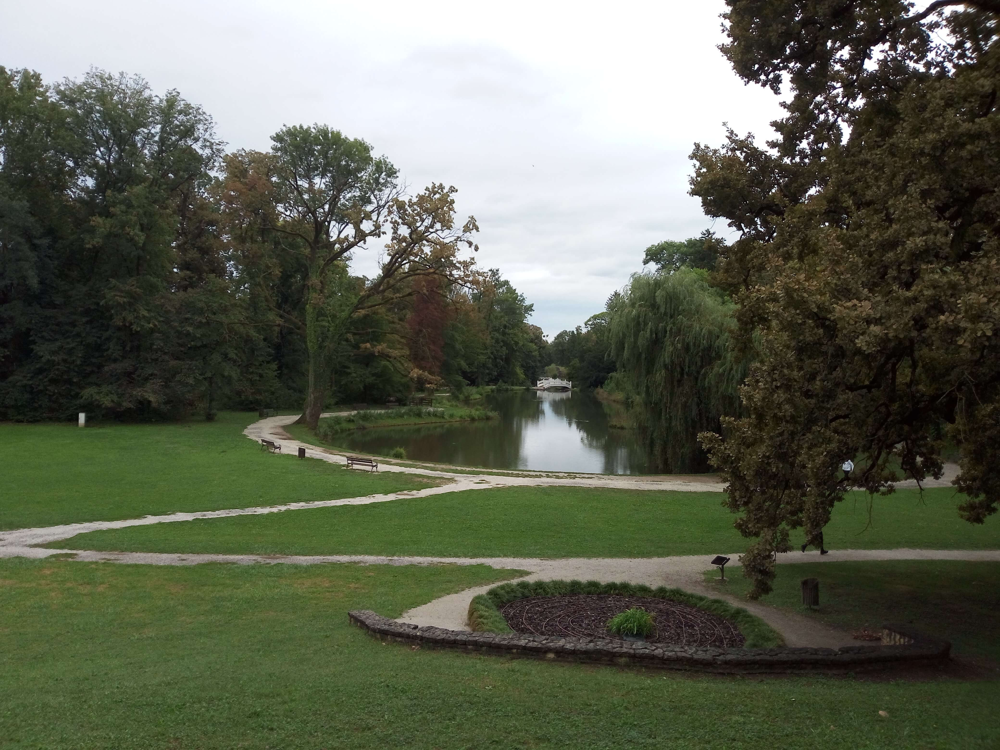
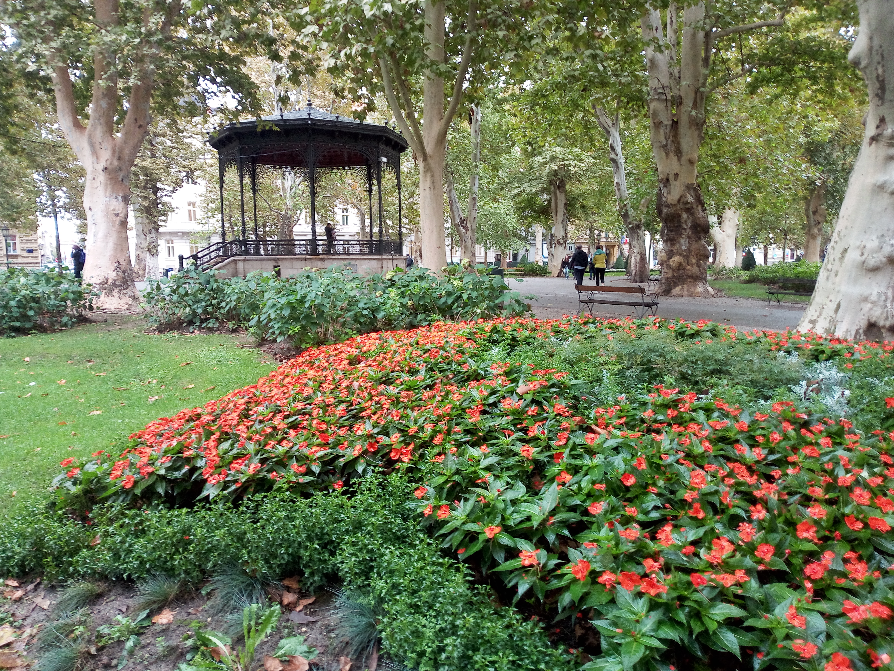

Zagreb
Croatia · Central Europe
Zagreb, the capital of Croatia, combines historic architecture, lively squares and peaceful green spaces. From the city's elegant streets and panoramic views to its expansive parks, Zagreb offers a variety of places to explore. This page brings together my personal photographs and memories from three different locations across the city.

City View
Explore Photos
Maksimir Park
Explore Photos